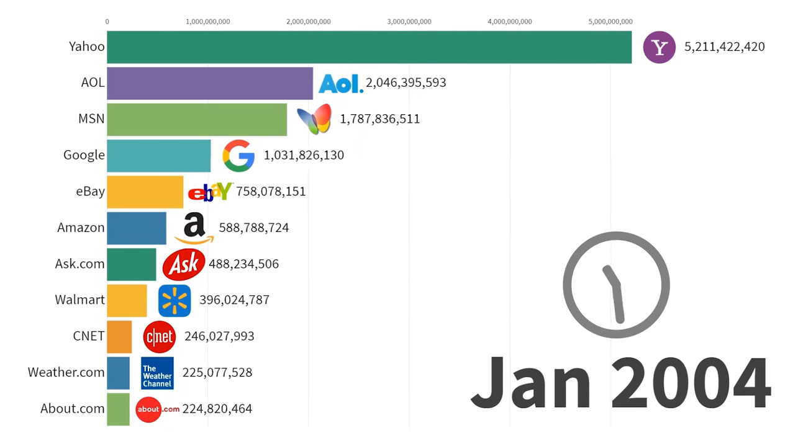
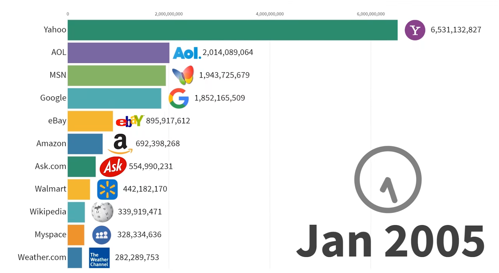

2004 to 2005
Author: Terence Au
Yahoo retains their status as most visited site in January 2004. Their site continues to be visited by many, at an especially fast rate. Comparatively, AOL, MSN, and Google all fall quite behind, and improve in the number of visits, but are not able to keep up with Yahoo.
Yahoo continues to gain visits, but compared to 2004, AOL and MSN lose out on visits, while Google gains traction and begins to be visited more and more often.

